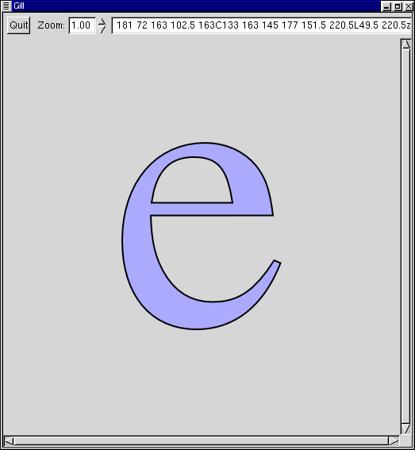
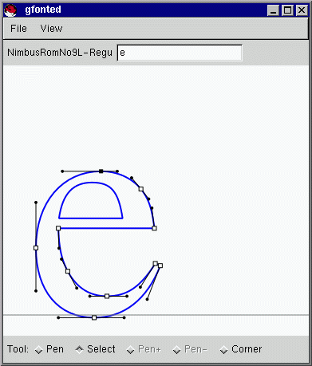

www.levien.com30 Jun 1999: Gfonted has been sleeping, not dead.
The development of gfonted has been transferred to the Gill project. Gill is not quite as capable as gfonted at actually editing bezier glyphs, but will soon.
Gill uses the Gnome Canvas instead of GtkCaanvas. Basically, all of the "live" development is going into the Gnome version of the code.

A screenshot from a Gill prototype, displaying an "e" from Nimbus Roman No9 L.
The gfonted project is destined to become a font editor for Adobe Type 1 format fonts. It is currently in the very early stages of development.
The gfonted project is also a vehicle for some infrastructure upgrades to Gtk+. Currently, gfonted contains:
- GdkRgb, a library for fast, simple, high quality rendering of RGB images to the screen.
- vpaar, a fast vector path antialiased renderer.
- gtk_caanvas, a Gtk+ canvas widget supporting fully alpha composited layers.
- parset1, a parser for Adobe Type1 font files.
A current module in progress provides general vector path operations, including intersection, union, symmetric difference, and stroke outline. 29 Sep 1998: This module is now almost complete - it just needs some code to handle the degenerate cases with numerical stability.
It is anticipated that most of these infrastructure improvements will be folded back into the Gtk+ development tree, hopefully in time for the 1.2 release.
Here's a screenshot of gfonted, showing a glyph loaded from an Adobe Type1 font (the URW version of Times Roman):

If you're interested, you can download this snapshot (requires Gtk 1.0, also compiles with 1.1).
Adobe documents on the Type 1 file format and related info (.pdf files):
- Adobe's site on type file formats.
- Adobe'sFont Technical Information site. Many juicy documents here!
- Type 1 file format.
- Tech Note 5015 Supplement to Type 1 specification.
- AFM spec.
- Tech Note 5040 Downloadable fonts.
Other links that may be of interest:
- Type1 font tools by Eddie Kohler, including a command line utility for creating instances of multiple master fonts.
- Spif, a Gtk+ font editor by Matty Farrow.
- Freetype, a rasterizer currently for TrueType fonts.
- t1lib, a type1 rasterizer library for Unix/X11, by Rainer Menzner.